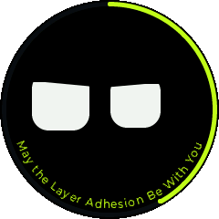
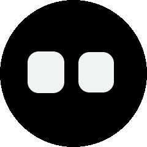
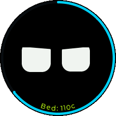
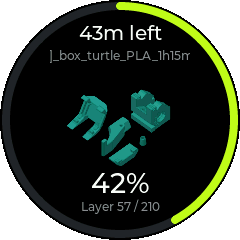
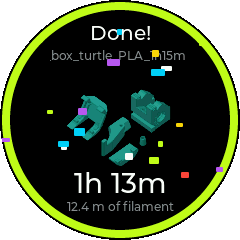
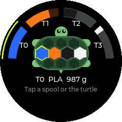
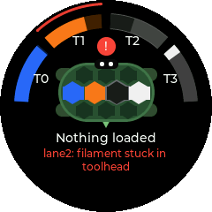
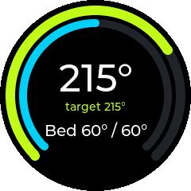
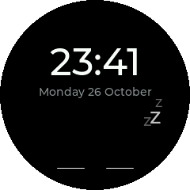

Drawn eyes that react to your printer, print progress with the model's thumbnail, and a screen for the Box Turtle. Made for Voron printers running Klipper.

Works in Chrome and Edge on a desktop. Already running the stock firmware on Wi-Fi? You can install over Wi-Fi instead and keep the stock GIFs.
KNOMI-xxxx network shown on its screen and open 192.168.4.1.This replaces everything on the KNOMI, including the stock GIFs. You can go back to the stock firmware at any time.
Swipe between them on the KNOMI. It returns to the face on its own, or jumps to whatever needs attention.







